作者：CamelGo
Crazepony-II(第4版/4.1版)硬件組成
單片機在任何一個系統裡面，無論他扮演什麼角色。它要正常工作，都必須要有一個最小系統。下面，從最小系統開始簡介Crazepony：
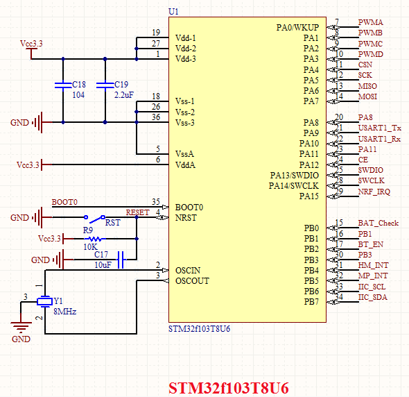
STM32的最小系統一般包括：復位電路，外部時鐘電路，啟動模式選擇電路，電源退偶電路等
復位
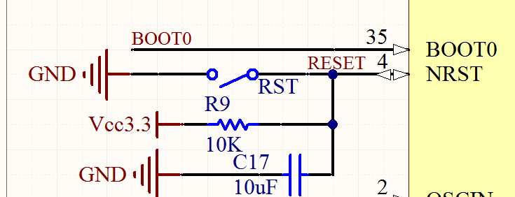
查閱意法半導的官方手冊可以知道，STM32系列單片機都是低電平復位。於是採用如圖的主流復位電路作為Crazepony主控的復位電路
外部時鐘
官方手冊有寫，外部時鐘我們採用的是8M無源晶振。單片機內部做倍頻，系統時鐘最高可達到72M
啟動模式
STM32的啟動模式分為三種，可以下面的表格給出：
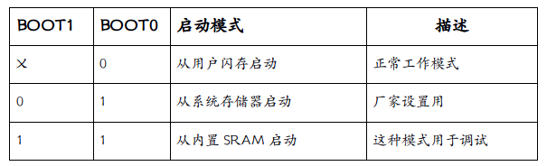
由於為了方便用戶調試和二次開發，所以Crazepony採用了SWD在線程序調試接口和ISP程序下載兩種方式。SWD調試接口可以使用編譯調試器在線對程序進行仿真、調試、下載，這對開發人員來說是很方便的，缺點就是需要PC端有一個這樣的軟件來支撐。串口ISP下載方式，只需要STM32的UART1的兩個數據 線，就能將編譯生成的*.HEX文件燒寫進單片機，不足之處是不能仿真程序。
關於啟動模式的應用，在USB-Serial處會有介紹。
電源退偶
不僅是主控最小系統需要對電源退偶，所有的數字電路和模擬電路共存的系統，都需要對電源退偶。電源退偶，說直接一點就是將電源上的噪聲電壓引入到地平面，讓電源電壓保持在一個穩定的值，這樣系統才可能穩定工作。怎麼做呢？用一個大電容並聯一個小電容。
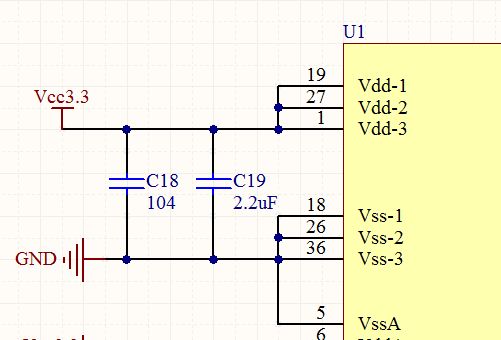
我們都知道，電容對頻率越高的信號，呈現低阻特性，對直流呈現高阻特性。那麼電源上的噪聲對地平面而言，就是一個交流信號，交流信號就能通過電容到達地平面，而電源是一個直流，電容對他呈現出無限大的阻力，無法通過。這樣，我們用示波器就可以看到，加了退偶電容的電源會比沒加退偶電容的電源，波形要穩定得多。
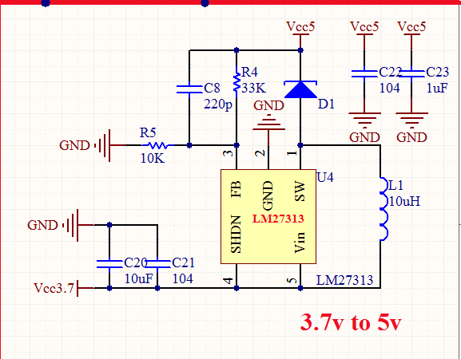
市面上所有的航模動力電池，都是3.7V的標稱值，比此電壓高的電池，都是幾個3.7V的電池串聯起來的
Crazepony採用了一節動力電池，電池電壓是3.7V，而系統所有芯片都要求是3.3v供電。3.7V到3.3V只有0.4v的壓差，我們考慮過採用低壓差的LDO穩壓芯片輸出，但是要知道，四個空心杯電機轉起來以後，瞬間電流能達到3A，此時電池電壓會被拉低到一個LDO無法正常工作的值，於是我們後來放棄了直接將電池接到LDO穩壓芯片上，而是在中間採用一個過渡的電路：一個DC-DC的升壓電路，首先將電池電源升到5V左右，再接入LDO芯片（MIC5205-3.3）如圖
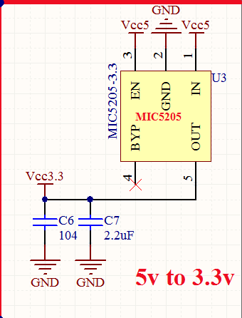
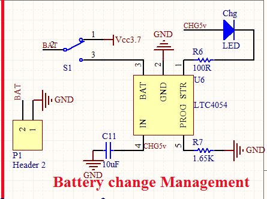
鋰電池充電這一塊，採用的是 LTC4054，外部電路簡單，一個電阻R7作為充電限流電阻，充電電流最大可達600mA，充電電流計算公式：IBAT =(VPROG /RPROG)*1000。
R6作為充電指示燈的限流電阻，選擇幾百歐姆就行了。當充電進行中，引腳STR常低，充電結束時，STR拉高。對應的狀態就是：充電時，CHG燈常亮，充電完成，CHG 燈滅。
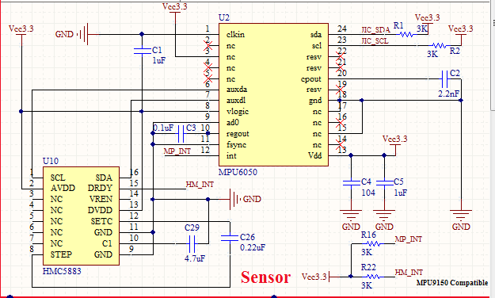
Crazepony採用的是最常用的MPU6050陀螺儀加速度計一體芯片，成本不超過20元，對小四軸來說，它的精度和性能綽綽有餘了（當我聽說教研室師兄用的一顆傳感器裸片賣1W+時，我整個人都不好了..），MPU6050在這個價位裡面幾乎是佔有絕對的性價比優勢。首先，它將陀螺儀和加速計整合在一個片上，通過IIC總線給出六個維度的ADC值；其次，芯片本身提供一個“從”IIC接口，供用戶接第三方的IIC器件，一般選擇是接一個電子羅盤，如HMC5883L，構成一個9軸的輸出的姿態模組，現在MPU9150已經喪心病狂的把電子羅盤功能也整合在片上了，但是要買60+元；最後，這顆芯片內部集成了一個DMP（Digital Motion Processor）處理器，這是最讓我愛不釋手夜不能寐的一個功能，直接硬件解算四元數，從某種程度上說解放了20%的主控資源。
採用HMC5883L作為機身的電子羅盤。電子羅盤接到MPU6050的從IIC總線（auxda，auxdl）上，在初始化MPU6050時，設置成主IIC總線與從IIC總線直通，STM32可以直接通過主IIC總線訪問從IIC總線，從而讀取HMC5883L的數據。
數據更新模式採用硬件中斷模式，即MPU6050和HMC5883L都有一個硬件中斷引腳MP_INT和HM_INT，這樣，能保證數據到來時間的準確，讓CPU資源最大化利用。
由於電子羅盤是一個對電磁環境很敏感的元件，所以在佈局時，儘量將HMC5883放在一個空曠的地帶，周圍不要有金屬，附近不要有不要有大電流通過。
在這個問題的處理上，dji的Phantom系列飛行器已經有了很好參考，Phantom系列的電子羅盤是放在飛機的起落架上的，可以看出他們的工程師在設計 飛行器的時候，考慮問題是很周全的。
無刷電機的操作相對來說是比較麻煩的，而有刷電機就是我們小時候玩的四驅車上的那種電機，接上電就能猛轉，反著接它就反著猛轉，就是這麼簡單。
Crazepony使用的是有刷空心杯電機，所以電機的控制屬於有刷直流電機控制。相對於無刷電調來說要簡單很多，所以電調我們就默認指無刷電機的電調，而這裡只用電機驅動來代替。Crazepony採用的是有刷空心杯高速電機，轉速在3W轉/分鐘左右。要驅動有刷電機，很簡單，只需要將信號的驅動能力增大，就能驅動有刷電機了。
那麼選擇什麼元件來提供這樣的特性呢?Crazepony的電機驅動IC選型經歷了三級管，中功率管的失敗，最後選用的是場效應管（即MOSFET）SI2302。
由於筆者完全是由於一種強烈的愛好選擇了飛行器，最開始連有刷電機和無刷電機的物理結構區別都不知道，電調又是啥？傻傻分不清楚……
從一個幾乎零基礎的狀態去選擇電機驅動芯片，彎路是必須要走的，學費是必須要交的。曾以為書上學到的東西馬上就能用，馬上能轉化為產品，後來發現真的是自己想多了。
最開始用的三極管作為電機驅動，採用很經典的共射電路“三極管工作在開關狀態應該就行了吧？”畫了用三極管驅動的PCB板，發現電機越轉越慢，根本沒勁。“也許是因為三極管扛不了大電流，好吧那我換個中功率管吧，集電極最大6A電流行了吧？”可以想象結果是不行的。
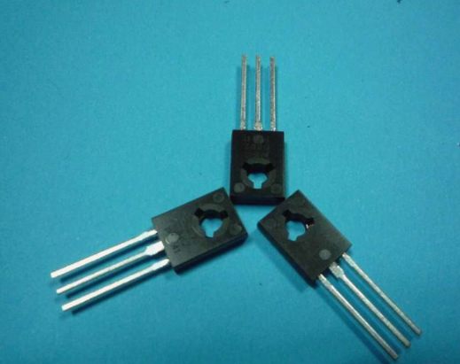
首先了解下為什麼三極管作為簡單的電機驅動是不可取的方案：
在晶體管家族裡面還有一種跟三極管特性互補的，所有特性都集中在開關狀態的晶體管，場效應管，即MOSFET。通常的場效應管完全導通時，源漏極電阻都是mΩ級別的，即它自身的耗散非常小。用它做為驅動管再合適不過了。最終選擇了一個SOT23封裝的,導通電壓Vgs<4v的場管（SI2302）,結果表現出了很好的驅動性能。
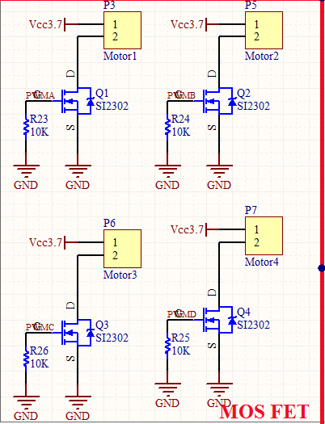
每個場效應管接一個大電阻下拉，目的是為了防止在單片機沒接手電機的控制權時，電機由於PWM信號不穩定開始猛轉。接一個下拉電阻，保證了場管輸入信號要麼是高，要麼是低，沒有不確定的第三種狀態。那麼電機也只有兩種狀態，要麼轉，要麼不轉。主控輸出的是PWM波形，用於控制場效應管的關閉和導通，從而控制電機的轉動速度。這就是crazepony電機驅動的原理。就是這麼簡單。
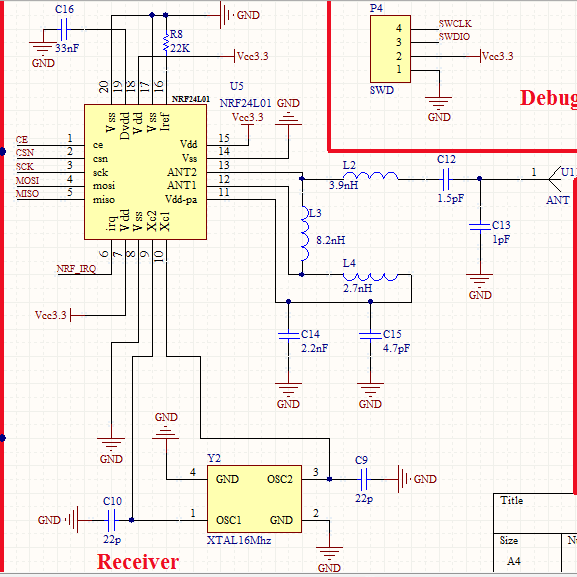
Crazepony在選擇通信芯片上，也是選擇了大家熟悉的芯片，NRF24L01。我相信很多朋友跟我一樣，在大學階段玩過最多的無線芯片就是它了，因為市面上有很多針對這個芯片延伸出來的各種通信模塊，技術很成熟，也很穩定，性價比很高。
我查閱了NRF24L01的芯片手冊，官方給出了整套硬件設計方案，包括天線的設計，PCB阻抗計算，以及底層的SPI驅動協議等等，資料很詳細。
於是我們將這顆芯片畫在了機身上面，在天線方面的選擇上，我採用體積很小的2.4G陶瓷天線，這種天線比PCB天線佔地面積小，對這個寸土寸金的小飛機而言，簡直太棒了。
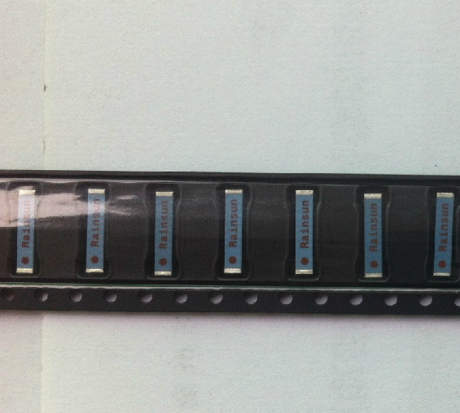
前面已經說了啟動模式的切換會在下載程序時用到。
Crazepony在設計之初，就考慮到了，一般用戶PC機上是不會裝像KEIL這種軟件的，但是所有的PC機都有USB接口，那麼在機身上集成一個USB-Serial協議轉換芯片，那麼就能夠直接用一根micro USB的數據線（就是現在統一的安卓手機數據/充電線）對飛機進行固件（*.HEX）升級了，這種方式真是太棒了。
試想，你的電腦裡原來都是跟你工作相關的文件或者是軟件，今天你買來一臺Crazepony，裡面的固件雖然已經很優秀了，但是我們一直在完善它，突然有一天，我們告訴你，我們的固件升級了，你可以選擇更新固件。那麼，現在有兩種方式供你選擇來升級你的飛機：第一，你需要裝一個叫做KEIL或者IAR或者其他類似的專業軟件，還得在淘寶買一個你看都看不懂的jlink調試器。第二，你只需要將你的安卓手機線拿出來，插上電腦，打開我們的一鍵升級軟件。這兩種方式，我想大家都會選擇第二種吧。
那麼，要實現第二種方式，我們就需要用到啟動方式的切換來實現。
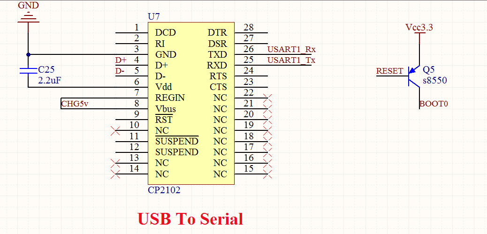
我們可以看到PNP型三極管Q5的基極是和復位按鍵連接的，PNP型三極管是基極低電平導通。Q5的發射極是和電源連接，集電極是和BOOT0連接。顯然，BOOT0的電位高低，是跟復位按鍵是否按下直接相關的，同時我們有上面的鋪墊也知道，BOOT0=1，BOOT1=1時，STM32從內部閃存開始啟動，用於程序調試用。復位按鍵按下之前，BOOT0=0（內部下拉），復位按鍵按下以後，BOOT0=1，復位後，間隔四個時鐘週期後採樣BOOT0的電平，如果是高電平，那麼進入調試模式，開始接收串口發送的程序代碼，存放在內部的Flash中，下載完畢以後，軟件復位，此時復位按鍵肯定已經彈起了，四個時鐘週期以後採樣BOOT0，此時是低電平，進入正常模式，這樣就完成了一次ISP下載。
這樣一來，機身和外部的有線接口就只有一根安卓手機的標配數據線micro USB線。它既是充電線，也是調參、燒寫固件的數據線。這對大媽來說，想必操作也是很簡單的吧。
有了USB-Serial的轉換，那麼我們的飛機和PC上位機的通信就有了必要的硬件基礎。
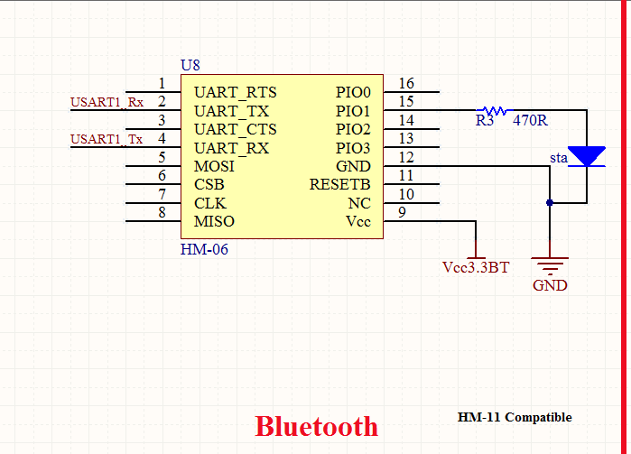
為了讓Crazepony能跟上智能機氾濫的步伐，同時也是為了增加它的適應性和降低成本的考慮，我們在原來的基礎上增加了藍牙透傳模塊，硬件焊盤上兼容藍牙2.1和藍牙4.0 BLE技術。就是說，同樣一個Crazepony的裸PCB板，可以選擇焊接藍牙2.1和藍牙BLE的模塊。
藍牙協議是很複雜的，要想去接觸並試圖一步一步的寫出來，在我現有的時間下，幾乎不太可能了。而將藍牙透明傳輸成串口，這就很好的將Crazepony與安卓設備對接了，可以直接在安卓設備上面開發遙控app或者上位機。這想想也有點小激動呢，於是，我們真的這麼幹了，也成功了。
Crazepony的主要硬件介紹到這裡就告一段落了，筆者剛結束學生時代，工程經驗十分有限，硬件設計過程中肯定許多有不足和漏洞，希望廣大讀者指正，我們一定會積極接受意見並作出修訂，希望把Crazepony做得更加完善，更加穩定，給這片土地上的廣大愛好者提供豐富的資料和開發經驗。